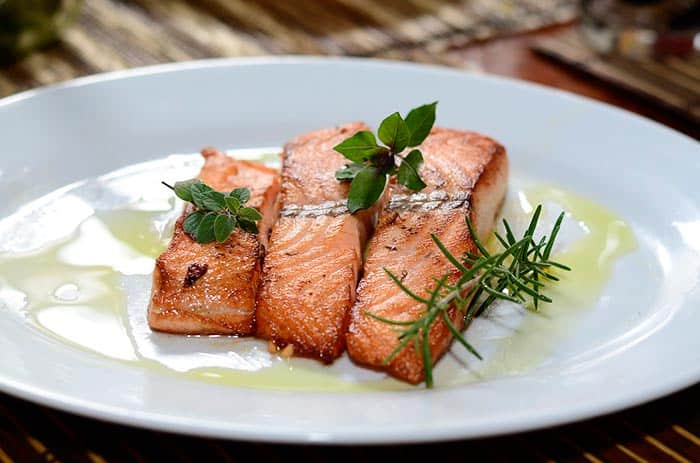

Aprende a realizar esta deliciosa receta realizada por nuestro chef Nicolpas Butterfield.

Ingredientes
4 filetes de salmón
Aceite de oliva
Pimienta negra
Sal
Preparación
Para este pescado tomaremos 4 filetes grandes de salmón rojo, sin espinas, gruesos, lo salaremos. Pasaremos los bifes de salmón por un plato espolvoreado con pimienta negra, pegándola con la mano en cada bife, como si quisiéramos rebozarlos.
En una sartén, preferentemente de hierro y antiadherente, calentaremos bien y añadiremos 4 cucharadas de aceite de oliva. Doraremos los bifes sellándolos a fuego fuerte, vuelta y vuelta. luego taparemos la sartén, bajamos el fuego y los cocinaremos lentamente durante 4 a 5 minutos, teniendo en cuenta que no hay que sobre cocinarlos.
Lo servimos bien saliente. Se puede acompañar con arroz.
Ahora ¡a disfrutar!